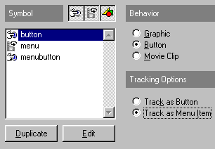
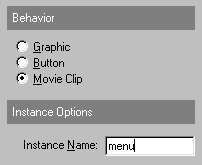
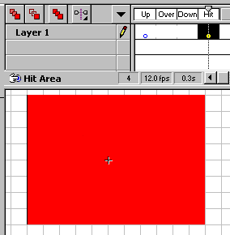

Using "Track as Menu"


 Downloadable FLA
Downloadable FLA
Track as menu allows you to create popup menus or dropdown menus. In this section, we will create a dropdown menu. (This will also make you use Tell Target).
Step 1. Create a button by pressing F8. This button, will be the button you click to access the menu.
Step 2. Create a movie clip.
Step 3. Edit the movie clip, and create two keyframes. The first labelled "empty", the second labelled "full".
Step 4. Create the buttons you want to drop down when you click the menu button. This could be a quick access menu, containing a button for every place of your site.
Step 5. Back to the movie clip. Let the "empty" keyframe remain empty. Now place all of the buttons which you want to drop down (the quick access buttons you just made) in the "full" keyframe.
Step 6. Click properties for each of the buttons you inserted, and in the definition tab, select "Track as Menu Item". Remember also, to assign actions to your buttons.

Step 7. Now go to your main movie, and insert the movie clip into your scene. Click properties for this movie clip, and name the instance "menu".

Step 8. Click properties for your menu button, and select actions. Add a "Tell Target" command that looks like this:
On (Release)
Begin Tell Target [/menu]
Goto and Stop [full]
End Tell Target
End On
This will make your menu appear when you click the menu button. We would though, also like the menu to disappear when you remove your mouse... So now comes the tricky part.
Step 9. Create a button by pressing F8. Name it "Hit Area". Edit it, and fill only the "Hit" area with a large colored square.

Step 10. Go back to the movie editing window, and insert this button into a seperate layer. The layer must be below the layer in which you have your buttons, so drag it to the button.
Step 11. As you can see, the button will become a transparent blue. This indicates that you have placed a button with only the hitarea on the scene. To make it work best, place the blue area, where you know the menu will not be visible, and also keep it away from the menu button.
Step 12. Click properties for this blue area, and give it the following Tell Target command:
On (Roll Over)
Begin Tell Target [/menu]
Goto and Stop [empty]
end Tell Target
End On
This will make the Drop Down menu disappear as soon as you put your mouse over the blue area, which will be transparent in your browser. This means, that the menu will disappear as soon as the mouse leaves the menu button.
And boys and girls, there you have it.